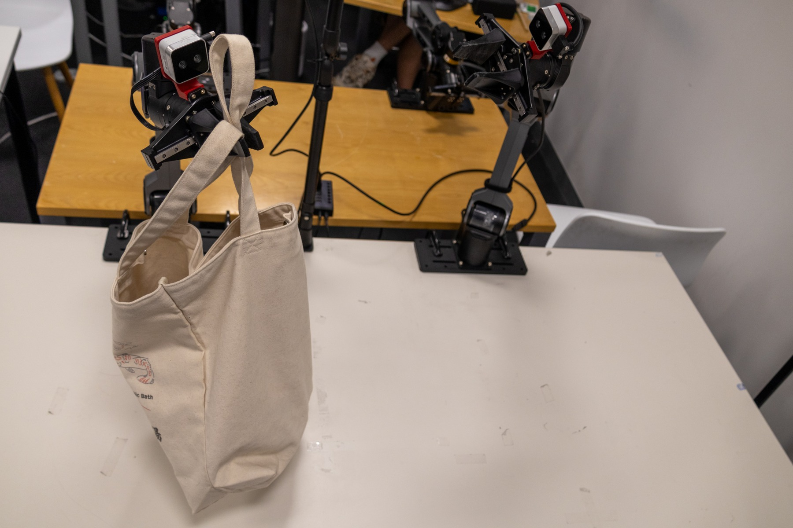
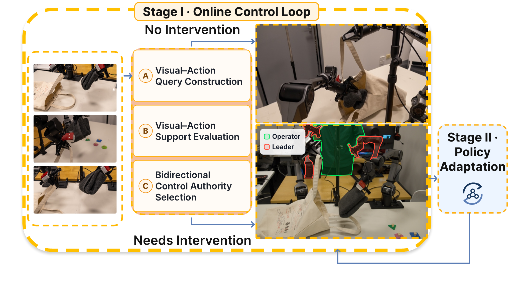

Construct
Pair current visual embeddings with the policy's proposed action chunk.
Robot Learning · Interactive Imitation Learning
AutoIntervene selectively transfers control between a visuomotor policy and an operator, turning targeted recovery into supervision for the next policy update.

Overview
Action-chunking policies can produce smooth actions even after perception error or execution drift moves the robot outside demonstrated support. AutoIntervene evaluates proposed chunks against a visual-action memory of successful task executions. Phase-local support triggers policy-to-operator transfer; global support enables autonomous operation to resume after recovery.
Method
Separate switching thresholds are calibrated from held-out expert demonstrations, avoiding direct manual tuning of score cutoffs.

Pair current visual embeddings with the policy's proposed action chunk.
Measure visual support and action risk against successful references.
Select policy or operator control using calibrated acceptance criteria.
Retain successful intervention segments as targeted corrective data.
Experiment videos
Complete rollouts are compressed for web playback while preserving every experiment from the original project.
Disassemble a pegged object and place all parts into the box.
Transfer a wooden potato between hands and place it into the box.
Fold a towel from a fixed initial configuration.
Fold a towel, pack it and the pegs into a bag, and move the bag to the target side.
Open the box, pack the objects inside, and close the lid.
Place three wooden plant objects into their matching box slots.
Remove pegs, fold the towel, reposition the box, and place the towel inside.
Remove pegs, fold two towels, and place both into the box.
Fold two towels, pick up the cable, and place all three items into the bag.
Experimental results
Success rates are measured over 25 unassisted physical rollouts per task and method unless otherwise noted. Time reports recorded demonstration or operator-control data.
Success (%) and recorded control-data time. Δt is cumulative additional operator-control time.
| Task | Initial | Human R1 | Human R2 | AutoIntervene R1 | AutoIntervene R2 | Additional Full Data | ||||||
|---|---|---|---|---|---|---|---|---|---|---|---|---|
| Succ. | Time | Succ. | Δt | Succ. | Δt | Succ. | Δt | Succ. | Δt | Succ. | Time | |
| Peg Disassembly | 16% | 1173.7s | 52% | 123.6s | 56% | 286.9s | 64% | 49.3s | 72% | 127.1s | 60% | 1853.0s |
| Potato Transfer | 44% | 368.7s | 52% | 20.7s | 80% | 74.2s | 48% | 29.6s | 76% | 50.2s | 64% | 547.3s |
| Towel Folding | 56% | 766.2s | 60% | 36.4s | 100% | 144.8s | 76% | 61.4s | 96% | 140.4s | 68% | 1100.0s |
| Towel Bagging | 24% | 1761.1s | 32% | 130.2s | 36% | 266.5s | 44% | 121.6s | 60% | 171.0s | 40% | 2536.7s |
| Lidded Box Packing | 8% | 989.6s | 20% | 107.5s | 92% | 246.7s | 52% | 63.1s | 100% | 130.2s | 60% | 1440.0s |
| Plant Sorting | 24% | 450.2s | 52% | 88.8s | 56% | 157.1s | 52% | 76.6s | 72% | 128.9s | 32% | 693.1s |
| Towel Box Packing | 44% | 1332.4s | 52% | 36.4s | 60% | 83.3s | 80% | 61.4s | 84% | 112.3s | 68% | 1930.5s |
| Average | 30.9% | 977.4s | 45.7% | 77.7s | 68.6% | 179.9s | 59.4% | 66.1s | 80.0% | 122.9s | 56.0% | 1442.9s |
Success (%) over three rounds.
| Training stage | Two-Towel Box Packing | Towels-and-Cable Bagging |
|---|---|---|
| Initial Policy | 28% | 8% |
| AutoIntervene R1 | 44% | 20% |
| AutoIntervene R2 | 64% | 28% |
| AutoIntervene R3 | 88% | 48% |
| Additional Full Data | 52% | 28% |
Two-Towel Box Packing success (%).
| Training stage | DP | FM | ACT |
|---|---|---|---|
| Initial Policy | 32% | 32% | 28% |
| AutoIntervene R1 | 40% | 36% | 44% |
| AutoIntervene R2 | 56% | 48% | 64% |
| AutoIntervene R3 | 92% | 80% | 88% |
| Additional Full Data | 44% | 40% | 52% |
Lidded Box Packing; 10 perturbed and 10 nominal rollouts per method. ↑ higher is better; ↓ lower is better.
| Method | Cut-in Recall ↑ | Cut-in Precision ↑ | Cut-out Recall ↑ | Cut-out Precision ↑ | False-trigger Rate ↓ |
|---|---|---|---|---|---|
| AutoIntervene | 1.00 | 1.00 | 1.00 | 1.00 | 0.00 |
| Prior handoff monitors | |||||
| LazyDAgger | 0.40 | 1.00 | 0.00 | N/A | 0.80 |
| RND-DAgger (Wrec=5) | 0.80 | 0.16 | 0.00 | 0.00 | 0.90 |
| RND-DAgger (Wrec=30) | 0.80 | 0.16 | 0.75 | 0.12 | 0.90 |
| Ablations | |||||
| w/o visual support | 0.00 | N/A | N/A | N/A | 0.00 |
| w/o action risk | 0.90 | 1.00 | 0.56 | 0.56 | 0.00 |
Key result
Across real-world bimanual tasks, targeted intervention trajectories support iterative policy improvement with less operator-control time than collecting additional full demonstrations.
View complete results in the paper →Citation
@article{autointervene2026,
author = {Jinhe Tang and Weiming Zhi},
title = {AutoIntervene: Calibrated Intervention for
Action-Chunking Imitation Learning Policies},
year = {2026}
}Publication venue and identifier will be updated when finalized.